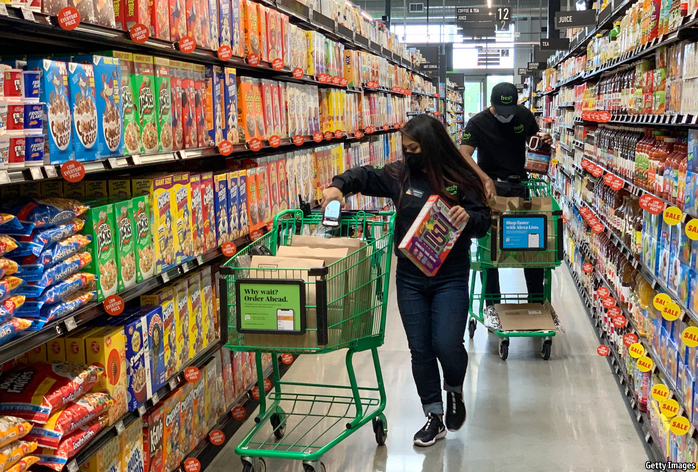

2021-04-08T06:10:43+00:00
食品摊
杂食动物
关于超市死亡的广泛报道是夸大其词【专题报道《购物的未来》系列之五】
今年早些时候，企业家马克·洛尔（Marc Lore）宣布将辞去在沃尔玛的职务，此前他领导了这家全球最大的实体零售商对亚马逊发起数字反攻。他的许多职责已由最近被任命为沃尔玛首席“全”战略官（Chief Omni Strategy Officer）的凯西·卡尔（Casey Carl）接手。这个头衔不同寻常——“字母用光了。”卡尔打趣道。其中的“omni”代表了“全渠道”（omnichannel），尽管这个词不怎么漂亮，但意味深长。
沃尔玛于2016年收购了洛尔的公司Jet.com，一年后亚马逊收购了食品杂货连锁店全食超市（Whole Foods），令整个行业风起云涌。洛尔受命领导沃尔玛的反击。在他的带领下，沃尔玛网站Walmart.com取代了eBay，成为美国第二大在线零售商。然而五年后它还是远远落后于亚马逊。公司推动数字化带来了大量赤字，还在与这头“本顿维尔巨兽”不合拍的网红公司（如男装公司Bonobos）上一掷千金。据报道，负责实体店的高管们对此颇有微词。沃尔玛新近对“全”的关注将实体和数字战略结合在一起，透露出它并不计划把电子商务置于其遍布美国的4000家超市网络之上。卡尔说，相反，它把两者都视为同一个以客户为中心的“生态系统”的一部分。
沃尔玛远不止一家食品杂货连锁店，但其全渠道战略表明，疫情极大改变了食品和其他必需品的销售商，在几个月之内就使在线买菜的渗透率从低个位数提高到接近两位数。沃尔玛迅速扩展了服务来提升线上和线下体验，例如到店取货、路边收货和商店递送（在某些情况下直达客户的冰箱）。它还推出了Walmart +，一项类似于亚马逊金牌会员（Amazon Prime）的订阅服务，可为会员提供快速送货、汽油折扣和其他优惠。
亚马逊也是四面出击。在美国，除全食超市之外，它还在尝试运营一家大型无人超市，而“亚马逊新鲜”（Amazon Fresh）商店提供当日取货和送货服务，手机应用还能够让购物者不用排长队结帐。中国最大的技术平台，如阿里巴巴和京东，同样引人注目。两者都在建立庞大的连锁超市。沃尔玛的国际战略负责人李·霍普金斯（Leigh Hopkins）说：“在中国，线下资产再次变得炙手可热。”
最大的问题是这些全渠道策略能否赚钱。全球超市行业都因疫情受益，这是因为食品杂货店在封锁期间继续营业，以及任何零售品类的线上活动都经历了有史以来最大的激增——根据数据公司Forrester的报告，2020年美国的这一数字上升了近50%。随着困守家中的消费者从餐馆转向自己的厨房，其“胃口消费份额”增加了。从亚洲到美国，即使封锁措施有所缓解，在线买菜仍在继续增长，这表明这种趋势将比疫情更为持久。
尽管如此，人们普遍认为，没有几家零售商可以通过在线卖菜赚钱，哪怕是亚马逊。这是因为相比在超市中常见的那样让顾客自己挑选、打包并带回家，把笨重的水果和蔬菜送货上门的成本很高。食品零售业务在上线之前的利润率已经低至2%到4%，只有最有资本和最有效率的商家才可以保证在网络的冲击中幸存下来。
甚至在疫情之前，一些结构性因素就已经影响了超市的利润。在欧美，来自奥乐齐（Aldi）和利多（Lidl）等低成本运营商的压力越来越大。还有劳动力成本的压力，因为一些大型零售商被迫提高最低工资。此外，食品配送和便利店正把顾客从更大的超市中吸走。超市行业唯一的安慰是线上的渗透极其缓慢，它们认为自己还有足够的时间来开展必要的数字投资。
这一切在疫情期间迅速改变，因为购物者上了一堂网上买菜的速成班。现在他们已经克服对送货档期和重复订购的恐惧症，对更快更好的服务的需求只会上升，这给零售商的利润带来了进一步的压力。贝恩（Bain）的分析师表示，除非食品杂货店开始对在线服务收取更多费用，否则从商店或仓库发货的经营亏损可能在5%到15%之间。即使在最好的情况下，哪怕是到店或路边取货也就是刚刚能打平。贝恩说，超市必须投资于更好的技术并提升线上服务，以防止在未来十年内利润继续被侵蚀。即便如此，食品杂货店也可能被亚马逊和阿里巴巴这样的科技巨头击败。为了竞争，许多公司将不得不合并或寻找其他收入来源，例如应用内广告。无论如何，使用实体店来作为数字尝试的补充可能至关重要。
甚至在虚拟买菜起步比西方更早的东亚地区，线上和线下世界的融合也越来越成为一种常态。沃尔玛的霍普金斯描述了全渠道在中国蓬勃发展的几种方式。京东等在线食品杂货商专注于从商店和市中心仓库（称为“前置仓”）快速取货来快速送货，有时30分钟内就能送达。他说，商店越来越被视为靠近客户的“节点”，这增加了在线购物的便利性。
东方之道
考虑到中国的城市密度，这甚至可以盈利。里昂证券的梁向奕表示，阿里巴巴和京东最具在网上赚到钱的优势，而拼多多正在通过拼团购买和社区团购快速发展。它们正投入巨资升级超市。阿里巴巴旗下的一家最先进的连锁超市“盒马鲜生”有200多家门店，购物者可以在手机应用上了解自己购买的商品，在店内用餐，并让人把食品杂货送回家。预期较小的参与者会联合起来或是被收购才能参与竞争。中国在线零售商苏宁最近收购了法国零售商家乐福在中国的大卖场业务。阿里巴巴已经控制了中国最大的仓储式零售商高鑫零售集团，后者是沃尔玛在中国的大型超市的主要竞争对手。
随着超市努力扩大规模以对抗亚马逊和沃尔玛等巨头并击退折扣店，北美和欧洲也应该会出现整合。2016年一场跨大西洋的合并打造了超市巨头皇家阿霍德德尔海兹集团（Ahold Delhaize），据信这帮助该公司发展了全渠道业务，在疫情期间为客户提供了良好的服务。英国最大的零售商特易购（Tesco）和欧洲大陆最大的零售商之一家乐福建立了战略合作伙伴关系。
不过，较小的连锁超市也可以找到数字救星——不过需要付费。在美国和加拿大，被寄予最大希望的公司之一是快速发展的食品杂货平台Instacart，该平台可能会在今年首次公开募股，估值预计在300亿美元。它雇用了50万名零工工人，服务于约45,000家商店，为购物者提供送货上门或到店取货服务。它还为超市提供技术，让它们能自营全渠道服务。Instacart的总裁尼拉姆·加南特里安（Nilam Ganenthiran）预计该地区的在线食品杂货销售规模在未来几年内将几乎翻一番，达到总销售额的20%以上。他说，Instacart的规模越大，就越容易将其技术（他称之为数字“管道”）扩展到更多超市，公司工程师将向它们提供意见，帮助它们降低成本并推动零售客户进一步增长。
在向零售商销售技术时，Instacart渴望成为Shopify。正如这家加拿大公司谈论“武装叛乱分子”一样，加南特里安声称他想“武装食品杂货商”。但他不认为未来将是纯数字化的。他相信顾客会想要保留选择。有时他们会想要杂货被送上门，有时会想要开车自己去超市提货，有时他们就是想自己去店里买。然而，即使是这种层次的选择也是开创性的。“食品杂货的上一次重大创新是超市的出现，”他说，“那是整整一代人之前的事情了。”
2021-04-08T06:10:43+00:00
The food stall
Omnivores
Widespread reports of the death of the supermarket have been exaggerated

EARLY THIS year Marc Lore, an entrepreneur who led Walmart’s digital counter-attack against Amazon, announced that he was stepping down from the world’s biggest physical retailer. Many of his responsibilities have been picked up by Casey Carl, recently appointed Chief Omni Strategy Officer at Walmart. It’s an unusual title. “They ran out of characters,” Mr Carl quips. Omni stands for omnichannel, and though not a pretty word, it signifies a lot.
Walmart bought Mr Lore’s company, Jet.com, in 2016, the year before Amazon acquired Whole Foods, a chain of grocery stores, putting the wind up the entire industry. Mr Lore was asked to lead the Walmart counter-attack. Under his stewardship, Walmart.com overtook eBay to become America’s second-biggest online retailer. Yet five years on it is well behind Amazon. The digital push bled red ink, and money was also splurged on trendy dotcom darlings like Bonobos, a menswear firm, that did not fit with “The Beast of Bentonville”. Reportedly, there were rumblings of discontent among executives overseeing physical stores. The new focus on “omni”, joining physical and digital strategies together, suggests that Walmart has no plan to prioritise e-commerce over its 4,000-store network in America. Instead it sees both as part of the same customer-focused “ecosystem,” Mr Carl says.
Walmart is far more than a grocery chain, but its omnichannel strategy shows how purveyors of food and other essentials are being transformed by the pandemic, which in a few months has pushed online grocery shopping from low-single-digit penetration rates to near double digits. Walmart swiftly expanded services to help facilitate the online and offline experience, such as pick-up in store, kerbside delivery and delivery from its shops—in some cases direct to the customer’s fridge. It also introduced Walmart +, a subscription service similar to Amazon Prime that gives members express delivery, discounted petrol and other perks.
Amazon has also gone omni. In America, besides Whole Foods, it is experimenting with a full-sized cashierless supermarket, with Amazon Fresh stores offering same-day pick-up and delivery, and with apps that enable shoppers to jump the checkout queue. So, remarkably, have China’s biggest tech platforms, such as Alibaba and JD.com. Both are building vast supermarket chains. “In China offline assets are becoming hot again,” says Leigh Hopkins, head of Walmart’s international strategy.
The biggest question is whether these omnichannel ventures can make money. Globally the supermarket and superstore sector has had a profitable pandemic, benefiting both from the fact that grocery stores remained open during lockdowns, and from the biggest surge in online activity of any retail category—rising by almost 50% in America in 2020, according to Forrester, a data firm. Its “share of stomach” has increased, as homebound consumers switched from restaurants to their own kitchens. And from Asia to America, online grocery shopping has continued to grow even when lockdowns have eased, suggesting that the trend will outlast the pandemic.
Nonetheless it is widely assumed that few retailers, even Amazon, can make money from selling groceries online, because of the high cost of delivering bulky fruit and vegetables rather than having customers pick them, pack them and take them home, as is common in supermarkets. In a business such as food retailing that already had margins as low as 2-4% before going online, only the best capitalised and most efficient are guaranteed to survive the online onslaught.
Even before the pandemic, several structural factors weighed on supermarkets’ bottom lines. In Europe and America, pressure from low-cost operators such as Aldi and Lidl was increasing. So were labour costs, as some big retailers felt compelled to increase minimum wages. Moreover, food delivery and convenience stores were leaching customers away from bigger supermarket aisles. The industry’s only consolation was that online penetration was glacial, and it thought it had time to spare before making the necessary jump in digital investment.
That has quickly changed during the pandemic, as shoppers have been given a crash course in online grocery. Now that they have overcome their phobia of delivery slots and repeat orders, demand for faster and better service is only likely to increase, putting further pressure on retailers’ profits. Unless grocers start charging more for online services, say analysts at Bain, operating losses from sending goods out from stores or warehouses could range from 5-15%. Even click-and-collect, or kerbside pick-up, barely breaks even in the best of cases. Supermarkets must invest in better technology and up their online game to stop margins continuing to erode over the next decade, says Bain. And even then, grocers are likely to be outgunned by tech giants such as Amazon and Alibaba. To compete, many will have to consolidate or find other sources of revenue such as in-app advertising. In all cases, using physical stores to complement their digital efforts may be vital.
Even in East Asia, where virtual grocery shopping took off earlier than in the West, the blend of online and offline worlds is increasingly the norm. Walmart’s Mr Hopkins describes several ways in which omnichannel is flourishing in China. Online grocers, such as JD, are focusing on rapid pick-up of products from stores and inner-city warehouses, known as “dark stores”, for express delivery, sometimes within 30 minutes. He says shops are increasingly seen as “nodes” close to the customer that add to the convenience of online shopping.
Eastern approaches
Given China’s urban density, it can even be profitable. Elinor Leung of CLSA says Alibaba and JD.com are best placed to make money online, and PDD is advancing fast via team purchases and community group-buy. They are pouring money into upgrading supermarkets. Alibaba owns a state-of-the-art supermarket chain called Freshippo (Hema in Chinese) with more than 200 stores that enable shoppers to use apps to learn what they are buying, to eat in store, and to have their groceries carried home. Smaller players are expected to join forces or be acquired to compete. Suning, a Chinese online retailer, recently bought the hypermarket operations in China of Carrefour, a French retailer. Alibaba has taken control of China’s largest big-box retailer, Sun Art Retail Group, a big rival to Walmart’s hyperstores in China.
Consolidation is also expected in North America and Europe, as supermarkets strive for scale to confront the likes of Amazon and Walmart, as well as fighting off the discounters. The transatlantic merger in 2016 that created Ahold Delhaize, a supermarket giant, is thought to have helped it develop an omnichannel business that served its customers well during the pandemic. Tesco, Britain’s largest retailer, and Carrefour, one of the biggest in continental Europe, have forged a strategic partnership.
Yet smaller supermarket chains can also find digital white knights—for a fee. In America and Canada, one of the biggest hopes lies with Instacart, a fast-growing grocery platform that may launch an initial public offering this year valuing it at $30bn. It offers shoppers a delivery or pick-up service, provided by 500,000 gig-economy workers serving about 45,000 stores. It also supplies technology for supermarkets to offer an omnichannel service themselves. Nilam Ganenthiran, president of Instacart, expects online grocery sales in the region almost to double over the next few years to above 20% of the total. He says that the bigger Instacart gets, the more easily it can scale up its technology (what he calls the digital “plumbing”) to more supermarkets, providing input from its own engineers to help reduce costs and drive further growth for its retail clients.
In selling technology to retailers, Instacart aspires to be like Shopify. Just as the Canadian firm talks of “arming the rebels”, Mr Ganenthiran claims that he wants to “arm the grocers”. But he does not think the future will be digital only. Customers will want choice, he believes. Sometimes they will want their groceries to be delivered. Sometimes they will want to drive to the supermarket to pick them up themselves. And sometimes they will simply want to do their own shopping. Yet even this level of choice is groundbreaking. “The last big innovation in groceries was the advent of supermarkets,” he says. “That was a full generation ago.”■
2021-04-08T06:10:43+00:00
食品攤
雜食動物
關於超市死亡的廣泛報道是誇大其詞【專題報道《購物的未來》系列之五】
今年早些時候，企業家馬克·洛爾（Marc Lore）宣布將辭去在沃爾瑪的職務，此前他領導了這家全球最大的實體零售商對亞馬遜發起數字反攻。他的許多職責已由最近被任命為沃爾瑪首席“全”戰略官（Chief Omni Strategy Officer）的凱西·卡爾（Casey Carl）接手。這個頭銜不同尋常——“字母用光了。”卡爾打趣道。其中的“omni”代表了“全渠道”（omnichannel），儘管這個詞不怎麼漂亮，但意味深長。
沃爾瑪於2016年收購了洛爾的公司Jet.com，一年後亞馬遜收購了食品雜貨連鎖店全食超市（Whole Foods），令整個行業風起雲湧。洛爾受命領導沃爾瑪的反擊。在他的帶領下，沃爾瑪網站Walmart.com取代了eBay，成為美國第二大在線零售商。然而五年後它還是遠遠落後於亞馬遜。公司推動數字化帶來了大量赤字，還在與這頭“本頓維爾巨獸”不合拍的網紅公司（如男裝公司Bonobos）上一擲千金。據報道，負責實體店的高管們對此頗有微詞。沃爾瑪新近對“全”的關注將實體和數字戰略結合在一起，透露出它並不計劃把電子商務置於其遍布美國的4000家超市網絡之上。卡爾說，相反，它把兩者都視為同一個以客戶為中心的“生態系統”的一部分。
沃爾瑪遠不止一家食品雜貨連鎖店，但其全渠道戰略表明，疫情極大改變了食品和其他必需品的銷售商，在幾個月之內就使在線買菜的滲透率從低個位數提高到接近兩位數。沃爾瑪迅速擴展了服務來提升線上和線下體驗，例如到店取貨、路邊收貨和商店遞送（在某些情況下直達客戶的冰箱）。它還推出了Walmart +，一項類似於亞馬遜金牌會員（Amazon Prime）的訂閱服務，可為會員提供快速送貨、汽油折扣和其他優惠。
亞馬遜也是四面出擊。在美國，除全食超市之外，它還在嘗試運營一家大型無人超市，而“亞馬遜新鮮”（Amazon Fresh）商店提供當日取貨和送貨服務，手機應用還能夠讓購物者不用排長隊結帳。中國最大的技術平台，如阿里巴巴和京東，同樣引人注目。兩者都在建立龐大的連鎖超市。沃爾瑪的國際戰略負責人李·霍普金斯（Leigh Hopkins）說：“在中國，線下資產再次變得炙手可熱。”
最大的問題是這些全渠道策略能否賺錢。全球超市行業都因疫情受益，這是因為食品雜貨店在封鎖期間繼續營業，以及任何零售品類的線上活動都經歷了有史以來最大的激增——根據數據公司Forrester的報告，2020年美國的這一數字上升了近50%。隨着困守家中的消費者從餐館轉向自己的廚房，其“胃口消費份額”增加了。從亞洲到美國，即使封鎖措施有所緩解，在線買菜仍在繼續增長，這表明這種趨勢將比疫情更為持久。
儘管如此，人們普遍認為，沒有幾家零售商可以通過在線賣菜賺錢，哪怕是亞馬遜。這是因為相比在超市中常見的那樣讓顧客自己挑選、打包並帶回家，把笨重的水果和蔬菜送貨上門的成本很高。食品零售業務在上線之前的利潤率已經低至2%到4%，只有最有資本和最有效率的商家才可以保證在網絡的衝擊中倖存下來。
甚至在疫情之前，一些結構性因素就已經影響了超市的利潤。在歐美，來自奧樂齊（Aldi）和利多（Lidl）等低成本運營商的壓力越來越大。還有勞動力成本的壓力，因為一些大型零售商被迫提高最低工資。此外，食品配送和便利店正把顧客從更大的超市中吸走。超市行業唯一的安慰是線上的滲透極其緩慢，它們認為自己還有足夠的時間來開展必要的數字投資。
這一切在疫情期間迅速改變，因為購物者上了一堂網上買菜的速成班。現在他們已經克服對送貨檔期和重複訂購的恐懼症，對更快更好的服務的需求只會上升，這給零售商的利潤帶來了進一步的壓力。貝恩（Bain）的分析師表示，除非食品雜貨店開始對在線服務收取更多費用，否則從商店或倉庫發貨的經營虧損可能在5%到15%之間。即使在最好的情況下，哪怕是到店或路邊取貨也就是剛剛能打平。貝恩說，超市必須投資於更好的技術並提升線上服務，以防止在未來十年內利潤繼續被侵蝕。即便如此，食品雜貨店也可能被亞馬遜和阿里巴巴這樣的科技巨頭擊敗。為了競爭，許多公司將不得不合并或尋找其他收入來源，例如應用內廣告。無論如何，使用實體店來作為數字嘗試的補充可能至關重要。
甚至在虛擬買菜起步比西方更早的東亞地區，線上和線下世界的融合也越來越成為一種常態。沃爾瑪的霍普金斯描述了全渠道在中國蓬勃發展的幾種方式。京東等在線食品雜貨商專註於從商店和市中心倉庫（稱為“前置倉”）快速取貨來快速送貨，有時30分鐘內就能送達。他說，商店越來越被視為靠近客戶的“節點”，這增加了在線購物的便利性。
東方之道
考慮到中國的城市密度，這甚至可以盈利。里昂證券的梁向奕表示，阿里巴巴和京東最具在網上賺到錢的優勢，而拼多多正在通過拼團購買和社區團購快速發展。它們正投入巨資升級超市。阿里巴巴旗下的一家最先進的連鎖超市“盒馬鮮生”有200多家門店，購物者可以在手機應用上了解自己購買的商品，在店內用餐，並讓人把食品雜貨送回家。預期較小的參與者會聯合起來或是被收購才能參與競爭。中國在線零售商蘇寧最近收購了法國零售商家樂福在中國的大賣場業務。阿里巴巴已經控制了中國最大的倉儲式零售商高鑫零售集團，後者是沃爾瑪在中國的大型超市的主要競爭對手。
隨着超市努力擴大規模以對抗亞馬遜和沃爾瑪等巨頭並擊退折扣店，北美和歐洲也應該會出現整合。2016年一場跨大西洋的合并打造了超市巨頭皇家阿霍德德爾海茲集團（Ahold Delhaize），據信這幫助該公司發展了全渠道業務，在疫情期間為客戶提供了良好的服務。英國最大的零售商特易購（Tesco）和歐洲大陸最大的零售商之一家樂福建立了戰略合作夥伴關係。
不過，較小的連鎖超市也可以找到數字救星——不過需要付費。在美國和加拿大，被寄予最大希望的公司之一是快速發展的食品雜貨平台Instacart，該平台可能會在今年首次公開募股，估值預計在300億美元。它僱用了50萬名零工工人，服務於約45,000家商店，為購物者提供送貨上門或到店取貨服務。它還為超市提供技術，讓它們能自營全渠道服務。Instacart的總裁尼拉姆·加南特里安（Nilam Ganenthiran）預計該地區的在線食品雜貨銷售規模在未來幾年內將幾乎翻一番，達到總銷售額的20%以上。他說，Instacart的規模越大，就越容易將其技術（他稱之為數字“管道”）擴展到更多超市，公司工程師將向它們提供意見，幫助它們降低成本並推動零售客戶進一步增長。
在向零售商銷售技術時，Instacart渴望成為Shopify。正如這家加拿大公司談論“武裝叛亂分子”一樣，加南特里安聲稱他想“武裝食品雜貨商”。但他不認為未來將是純數字化的。他相信顧客會想要保留選擇。有時他們會想要雜貨被送上門，有時會想要開車自己去超市提貨，有時他們就是想自己去店裡買。然而，即使是這種層次的選擇也是開創性的。“食品雜貨的上一次重大創新是超市的出現，”他說，“那是整整一代人之前的事情了。”